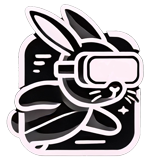

Mixed reality grand prix
SundayDriver
A dashboard appears in your room. The wipers sweep,
and behind the windscreen there is another world.
and behind the windscreen there is another world.

A NXT/WebXR productionSunday Driver · 2026 More free WebXR experiencesnxtwebxr.com↗